LC-04 comparisons Clarity and texture are independent. Same-Gaussian texture ablations separate existing gamma/additive domain, log detail, and detail limiting/taming. Unmatched results cannot establish gains or regressions.
acceptance-hard-edge · clarity-positive-20 · clarityGuidedLog · matched=False
Input PicEdit Matched candidate Candidate same values Difference ×8 Dark composite Light composite acceptance-hard-edge · clarity-negative-20 · clarityGuidedLog · matched=False
Input PicEdit Matched candidate Candidate same values Difference ×8 Dark composite Light composite acceptance-hard-edge · clarity-positive-60 · clarityGuidedLog · matched=False
Input PicEdit Matched candidate Candidate same values Difference ×8 Dark composite Light composite acceptance-hard-edge · texture-positive-20 · textureGaussianExistingDomain · matched=False
Input PicEdit Matched candidate Candidate same values Difference ×8 Dark composite Light composite acceptance-hard-edge · texture-negative-20 · textureGaussianExistingDomain · matched=False
Input PicEdit Matched candidate Candidate same values Difference ×8 Dark composite Light composite acceptance-hard-edge · texture-positive-60 · textureGaussianExistingDomain · matched=False
Input PicEdit Matched candidate Candidate same values Difference ×8 Dark composite Light composite acceptance-hard-edge · texture-negative-60 · textureGaussianExistingDomain · matched=False
Input PicEdit Matched candidate Candidate same values Difference ×8 Dark composite Light composite acceptance-hard-edge · texture-positive-20 · textureGaussianLog · matched=False
Input PicEdit Matched candidate Candidate same values Difference ×8 Dark composite Light composite acceptance-hard-edge · texture-negative-20 · textureGaussianLog · matched=False
Input PicEdit Matched candidate Candidate same values Difference ×8 Dark composite Light composite acceptance-hard-edge · texture-negative-60 · textureGaussianLog · matched=False
Input PicEdit Matched candidate Candidate same values Difference ×8 Dark composite Light composite acceptance-hard-edge · texture-positive-20 · textureGaussianLogTamed · matched=False
Input PicEdit Matched candidate Candidate same values Difference ×8 Dark composite Light composite acceptance-hard-edge · texture-negative-20 · textureGaussianLogTamed · matched=False
Input PicEdit Matched candidate Candidate same values Difference ×8 Dark composite Light composite acceptance-hard-edge · texture-positive-60 · textureGaussianLogTamed · matched=False
Input PicEdit Matched candidate Candidate same values Difference ×8 Dark composite Light composite acceptance-sky-branches · clarity-positive-20 · clarityGuidedLog · matched=True
Input 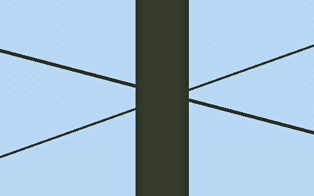
PicEdit Matched candidate 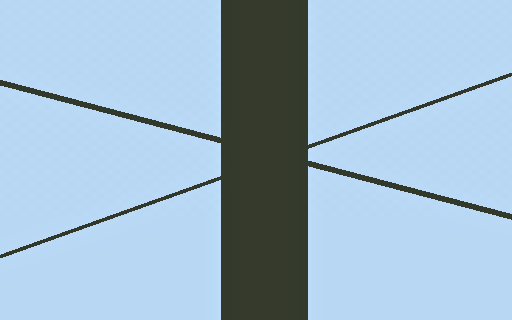
Candidate same values 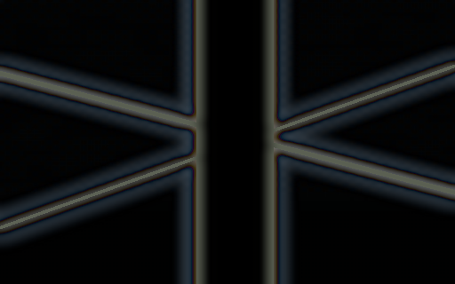
Difference ×8 Dark composite 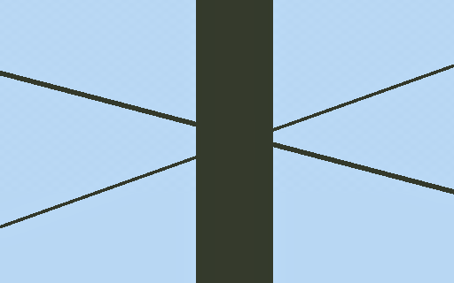
Light composite acceptance-sky-branches · clarity-positive-60 · clarityGuidedLog · matched=True
Input 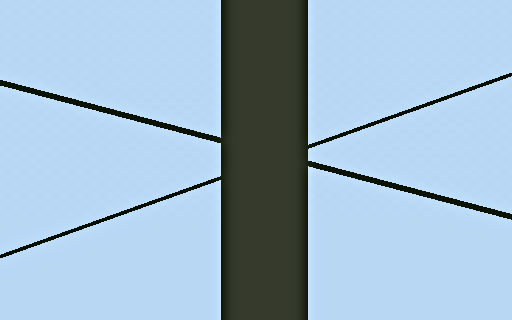
PicEdit Matched candidate 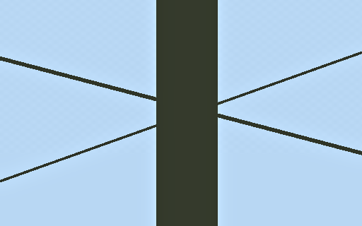
Candidate same values 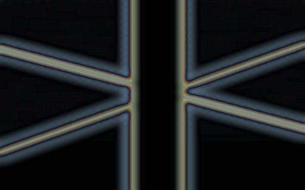
Difference ×8 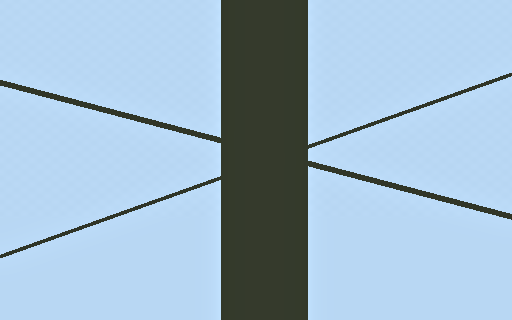
Dark composite Light composite acceptance-sky-branches · clarity-negative-60 · clarityGuidedLog · matched=True
Input 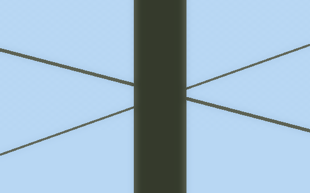
PicEdit 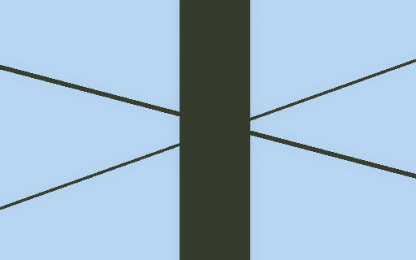
Matched candidate 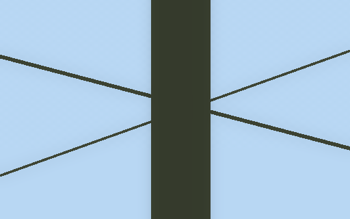
Candidate same values 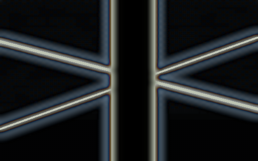
Difference ×8 Dark composite Light composite acceptance-sky-branches · clarity-negative-20 · clarityGaussianLog · matched=True
Input 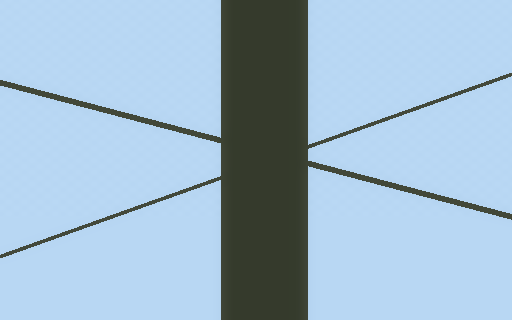
PicEdit Matched candidate 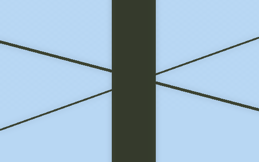
Candidate same values 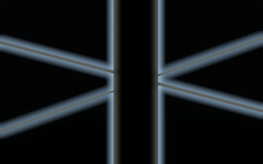
Difference ×8 Dark composite 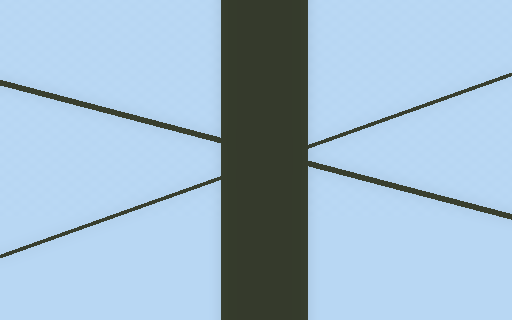
Light composite acceptance-sky-branches · clarity-positive-60 · clarityGaussianLog · matched=True
Input PicEdit Matched candidate 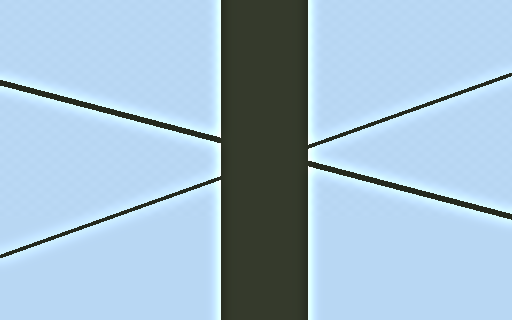
Candidate same values 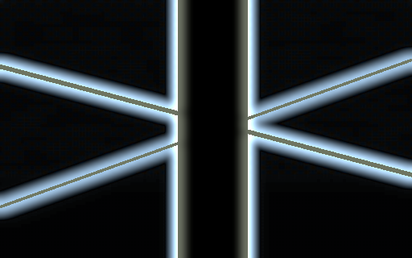
Difference ×8 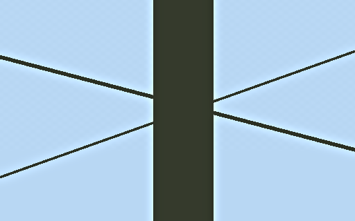
Dark composite Light composite acceptance-sky-branches · clarity-negative-60 · clarityGaussianLog · matched=True
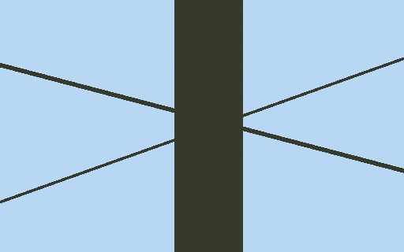
Input PicEdit Matched candidate 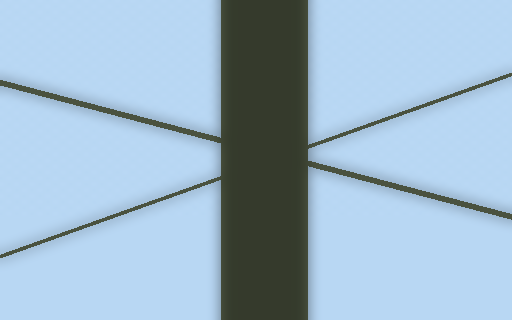
Candidate same values 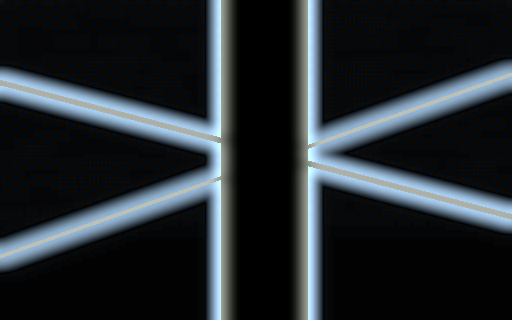
Difference ×8 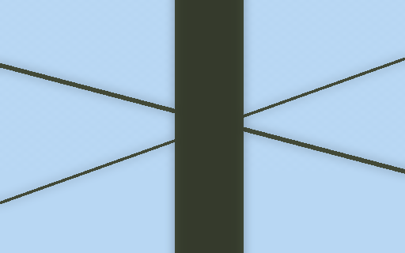
Dark composite Light composite acceptance-sky-branches · texture-positive-20 · textureGaussianExistingDomain · matched=False
Input PicEdit Matched candidate Candidate same values Difference ×8 Dark composite Light composite acceptance-sky-branches · texture-negative-20 · textureGaussianExistingDomain · matched=False
Input PicEdit Matched candidate Candidate same values Difference ×8 Dark composite Light composite acceptance-sky-branches · texture-negative-20 · textureGaussianLog · matched=False
Input PicEdit Matched candidate Candidate same values Difference ×8 Dark composite Light composite acceptance-sky-branches · texture-negative-20 · textureGaussianLogTamed · matched=False
Input PicEdit Matched candidate Candidate same values Difference ×8 Dark composite Light composite acceptance-skin-pores · clarity-positive-20 · clarityGuidedLog · matched=True
Input PicEdit Matched candidate Candidate same values Difference ×8 Dark composite Light composite acceptance-skin-pores · clarity-negative-20 · clarityGuidedLog · matched=True
Input PicEdit Matched candidate Candidate same values Difference ×8 Dark composite Light composite acceptance-skin-pores · clarity-positive-20 · clarityGaussianLog · matched=True
Input PicEdit Matched candidate Candidate same values Difference ×8 Dark composite Light composite acceptance-skin-pores · clarity-negative-20 · clarityGaussianLog · matched=True
Input PicEdit Matched candidate Candidate same values Difference ×8 Dark composite Light composite acceptance-skin-pores · texture-negative-20 · textureGaussianExistingDomain · matched=True
Input PicEdit Matched candidate Candidate same values Difference ×8 Dark composite Light composite acceptance-skin-pores · texture-positive-60 · textureGaussianExistingDomain · matched=True
Input PicEdit Matched candidate Candidate same values Difference ×8 Dark composite Light composite acceptance-skin-pores · texture-negative-60 · textureGaussianExistingDomain · matched=True
Input PicEdit Matched candidate Candidate same values Difference ×8 Dark composite Light composite acceptance-skin-pores · texture-positive-20 · textureGaussianLog · matched=True
Input PicEdit Matched candidate Candidate same values Difference ×8 Dark composite Light composite acceptance-skin-pores · texture-negative-20 · textureGaussianLog · matched=True
Input PicEdit Matched candidate Candidate same values Difference ×8 Dark composite Light composite acceptance-skin-pores · texture-positive-60 · textureGaussianLog · matched=True
Input PicEdit Matched candidate Candidate same values Difference ×8 Dark composite Light composite acceptance-skin-pores · texture-negative-60 · textureGaussianLog · matched=True
Input PicEdit Matched candidate Candidate same values Difference ×8 Dark composite Light composite acceptance-skin-pores · texture-positive-20 · textureGaussianLogTamed · matched=True
Input PicEdit Matched candidate Candidate same values Difference ×8 Dark composite Light composite acceptance-skin-pores · texture-negative-20 · textureGaussianLogTamed · matched=True
Input PicEdit Matched candidate Candidate same values Difference ×8 Dark composite Light composite acceptance-skin-pores · texture-positive-60 · textureGaussianLogTamed · matched=True
Input PicEdit Matched candidate Candidate same values Difference ×8 Dark composite Light composite acceptance-skin-pores · texture-negative-60 · textureGaussianLogTamed · matched=True
Input PicEdit Matched candidate Candidate same values Difference ×8 Dark composite Light composite acceptance-masonry-textiles · clarity-positive-20 · clarityGuidedLog · matched=True
Input PicEdit Matched candidate Candidate same values Difference ×8 Dark composite Light composite acceptance-masonry-textiles · clarity-negative-20 · clarityGuidedLog · matched=True
Input PicEdit Matched candidate Candidate same values Difference ×8 Dark composite Light composite acceptance-masonry-textiles · clarity-positive-60 · clarityGuidedLog · matched=True
Input PicEdit Matched candidate Candidate same values Difference ×8 Dark composite Light composite acceptance-masonry-textiles · clarity-negative-60 · clarityGuidedLog · matched=True
Input PicEdit Matched candidate Candidate same values Difference ×8 Dark composite Light composite acceptance-masonry-textiles · clarity-positive-20 · clarityGaussianLog · matched=True
Input PicEdit Matched candidate Candidate same values Difference ×8 Dark composite Light composite acceptance-masonry-textiles · clarity-negative-20 · clarityGaussianLog · matched=True
Input PicEdit Matched candidate Candidate same values Difference ×8 Dark composite Light composite acceptance-masonry-textiles · clarity-positive-60 · clarityGaussianLog · matched=True
Input PicEdit Matched candidate Candidate same values Difference ×8 Dark composite Light composite acceptance-masonry-textiles · clarity-negative-60 · clarityGaussianLog · matched=True
Input PicEdit Matched candidate Candidate same values Difference ×8 Dark composite Light composite acceptance-masonry-textiles · texture-positive-20 · textureGaussianExistingDomain · matched=True
Input PicEdit Matched candidate Candidate same values Difference ×8 Dark composite Light composite acceptance-masonry-textiles · texture-negative-20 · textureGaussianExistingDomain · matched=True
Input PicEdit Matched candidate Candidate same values Difference ×8 Dark composite Light composite acceptance-masonry-textiles · texture-positive-60 · textureGaussianExistingDomain · matched=True
Input PicEdit Matched candidate Candidate same values Difference ×8 Dark composite Light composite acceptance-masonry-textiles · texture-negative-60 · textureGaussianExistingDomain · matched=True
Input PicEdit Matched candidate Candidate same values Difference ×8 Dark composite Light composite acceptance-masonry-textiles · texture-positive-20 · textureGaussianLog · matched=True
Input PicEdit Matched candidate Candidate same values Difference ×8 Dark composite Light composite acceptance-masonry-textiles · texture-negative-20 · textureGaussianLog · matched=True
Input PicEdit Matched candidate Candidate same values Difference ×8 Dark composite Light composite acceptance-masonry-textiles · texture-positive-60 · textureGaussianLog · matched=True
Input PicEdit Matched candidate Candidate same values Difference ×8 Dark composite Light composite acceptance-masonry-textiles · texture-negative-60 · textureGaussianLog · matched=True
Input PicEdit Matched candidate Candidate same values Difference ×8 Dark composite Light composite acceptance-masonry-textiles · texture-positive-20 · textureGaussianLogTamed · matched=True
Input PicEdit Matched candidate Candidate same values Difference ×8 Dark composite Light composite acceptance-masonry-textiles · texture-negative-20 · textureGaussianLogTamed · matched=True
Input PicEdit Matched candidate Candidate same values Difference ×8 Dark composite Light composite acceptance-masonry-textiles · texture-positive-60 · textureGaussianLogTamed · matched=True
Input PicEdit Matched candidate Candidate same values Difference ×8 Dark composite Light composite acceptance-masonry-textiles · texture-negative-60 · textureGaussianLogTamed · matched=True
Input PicEdit Matched candidate Candidate same values Difference ×8 Dark composite Light composite acceptance-lowlight-noise · clarity-positive-20 · clarityGuidedLog · matched=True
Input PicEdit Matched candidate Candidate same values Difference ×8 Dark composite Light composite acceptance-lowlight-noise · clarity-negative-20 · clarityGuidedLog · matched=True
Input PicEdit Matched candidate Candidate same values Difference ×8 Dark composite Light composite acceptance-lowlight-noise · clarity-positive-60 · clarityGuidedLog · matched=True
Input PicEdit Matched candidate Candidate same values Difference ×8 Dark composite Light composite acceptance-lowlight-noise · clarity-negative-60 · clarityGuidedLog · matched=True
Input PicEdit Matched candidate Candidate same values Difference ×8 Dark composite Light composite acceptance-lowlight-noise · clarity-positive-20 · clarityGaussianLog · matched=True
Input PicEdit Matched candidate Candidate same values Difference ×8 Dark composite Light composite acceptance-lowlight-noise · clarity-negative-20 · clarityGaussianLog · matched=True
Input PicEdit Matched candidate Candidate same values Difference ×8 Dark composite Light composite acceptance-lowlight-noise · clarity-positive-60 · clarityGaussianLog · matched=True
Input PicEdit Matched candidate Candidate same values Difference ×8 Dark composite Light composite acceptance-lowlight-noise · clarity-negative-60 · clarityGaussianLog · matched=True
Input PicEdit Matched candidate Candidate same values Difference ×8 Dark composite Light composite acceptance-lowlight-noise · texture-positive-20 · textureGaussianExistingDomain · matched=False
Input PicEdit Matched candidate Candidate same values Difference ×8 Dark composite Light composite acceptance-lowlight-noise · texture-negative-20 · textureGaussianExistingDomain · matched=False
Input PicEdit Matched candidate Candidate same values Difference ×8 Dark composite Light composite acceptance-lowlight-noise · texture-positive-60 · textureGaussianExistingDomain · matched=True
Input PicEdit Matched candidate Candidate same values Difference ×8 Dark composite Light composite acceptance-lowlight-noise · texture-negative-60 · textureGaussianExistingDomain · matched=True
Input PicEdit Matched candidate Candidate same values Difference ×8 Dark composite Light composite acceptance-lowlight-noise · texture-positive-20 · textureGaussianLog · matched=False
Input PicEdit Matched candidate Candidate same values Difference ×8 Dark composite Light composite acceptance-lowlight-noise · texture-negative-20 · textureGaussianLog · matched=False
Input PicEdit Matched candidate Candidate same values Difference ×8 Dark composite Light composite acceptance-lowlight-noise · texture-positive-60 · textureGaussianLog · matched=True
Input PicEdit Matched candidate Candidate same values Difference ×8 Dark composite Light composite acceptance-lowlight-noise · texture-negative-60 · textureGaussianLog · matched=True
Input PicEdit Matched candidate Candidate same values Difference ×8 Dark composite Light composite acceptance-lowlight-noise · texture-positive-20 · textureGaussianLogTamed · matched=False
Input PicEdit Matched candidate Candidate same values Difference ×8 Dark composite Light composite acceptance-lowlight-noise · texture-negative-20 · textureGaussianLogTamed · matched=False
Input PicEdit Matched candidate Candidate same values Difference ×8 Dark composite Light composite acceptance-lowlight-noise · texture-positive-60 · textureGaussianLogTamed · matched=True
Input PicEdit Matched candidate Candidate same values Difference ×8 Dark composite Light composite acceptance-lowlight-noise · texture-negative-60 · textureGaussianLogTamed · matched=True
Input PicEdit Matched candidate Candidate same values Difference ×8 Dark composite Light composite acceptance-colors · clarity-positive-20 · clarityGuidedLog · matched=False
Input PicEdit Matched candidate Candidate same values Difference ×8 Dark composite Light composite acceptance-colors · clarity-negative-20 · clarityGuidedLog · matched=False
Input PicEdit Matched candidate Candidate same values Difference ×8 Dark composite Light composite acceptance-colors · clarity-positive-60 · clarityGuidedLog · matched=False
Input PicEdit Matched candidate Candidate same values Difference ×8 Dark composite Light composite acceptance-colors · clarity-negative-60 · clarityGuidedLog · matched=False
Input PicEdit Matched candidate Candidate same values Difference ×8 Dark composite Light composite acceptance-colors · clarity-positive-20 · clarityGaussianLog · matched=False
Input PicEdit Matched candidate Candidate same values Difference ×8 Dark composite Light composite acceptance-colors · clarity-negative-20 · clarityGaussianLog · matched=False
Input PicEdit Matched candidate Candidate same values Difference ×8 Dark composite Light composite acceptance-colors · clarity-positive-60 · clarityGaussianLog · matched=False
Input PicEdit Matched candidate Candidate same values Difference ×8 Dark composite Light composite acceptance-colors · clarity-negative-60 · clarityGaussianLog · matched=False
Input PicEdit Matched candidate Candidate same values Difference ×8 Dark composite Light composite acceptance-colors · texture-positive-20 · textureGaussianExistingDomain · matched=False
Input PicEdit Matched candidate Candidate same values Difference ×8 Dark composite Light composite acceptance-colors · texture-negative-20 · textureGaussianExistingDomain · matched=False
Input PicEdit Matched candidate Candidate same values Difference ×8 Dark composite Light composite acceptance-colors · texture-positive-60 · textureGaussianExistingDomain · matched=False
Input PicEdit Matched candidate Candidate same values Difference ×8 Dark composite Light composite acceptance-colors · texture-negative-60 · textureGaussianExistingDomain · matched=False
Input PicEdit Matched candidate Candidate same values Difference ×8 Dark composite Light composite acceptance-colors · texture-positive-20 · textureGaussianLog · matched=False
Input PicEdit Matched candidate Candidate same values Difference ×8 Dark composite Light composite acceptance-colors · texture-negative-20 · textureGaussianLog · matched=False
Input PicEdit Matched candidate Candidate same values Difference ×8 Dark composite Light composite acceptance-colors · texture-positive-60 · textureGaussianLog · matched=False
Input PicEdit Matched candidate Candidate same values Difference ×8 Dark composite Light composite acceptance-colors · texture-negative-60 · textureGaussianLog · matched=False
Input PicEdit Matched candidate Candidate same values Difference ×8 Dark composite Light composite acceptance-colors · texture-positive-20 · textureGaussianLogTamed · matched=False
Input PicEdit Matched candidate Candidate same values Difference ×8 Dark composite Light composite acceptance-colors · texture-negative-20 · textureGaussianLogTamed · matched=False
Input PicEdit Matched candidate Candidate same values Difference ×8 Dark composite Light composite acceptance-colors · texture-positive-60 · textureGaussianLogTamed · matched=False
Input PicEdit Matched candidate Candidate same values Difference ×8 Dark composite Light composite acceptance-colors · texture-negative-60 · textureGaussianLogTamed · matched=False
Input PicEdit Matched candidate Candidate same values Difference ×8 Dark composite Light composite acceptance-transparency · clarity-positive-20 · clarityGuidedLog · matched=False
Input PicEdit Matched candidate Candidate same values Difference ×8 Dark composite Light composite acceptance-transparency · clarity-negative-20 · clarityGuidedLog · matched=False
Input PicEdit Matched candidate Candidate same values Difference ×8 Dark composite Light composite acceptance-transparency · clarity-positive-60 · clarityGuidedLog · matched=False
Input PicEdit Matched candidate Candidate same values Difference ×8 Dark composite Light composite acceptance-transparency · clarity-negative-60 · clarityGuidedLog · matched=False
Input PicEdit Matched candidate Candidate same values Difference ×8 Dark composite Light composite acceptance-transparency · clarity-positive-20 · clarityGaussianLog · matched=False
Input PicEdit Matched candidate Candidate same values Difference ×8 Dark composite Light composite acceptance-transparency · clarity-negative-20 · clarityGaussianLog · matched=False
Input PicEdit Matched candidate Candidate same values Difference ×8 Dark composite Light composite acceptance-transparency · clarity-positive-60 · clarityGaussianLog · matched=False
Input PicEdit Matched candidate Candidate same values Difference ×8 Dark composite Light composite acceptance-transparency · clarity-negative-60 · clarityGaussianLog · matched=False
Input PicEdit Matched candidate Candidate same values Difference ×8 Dark composite Light composite acceptance-transparency · texture-positive-20 · textureGaussianExistingDomain · matched=False
Input PicEdit Matched candidate Candidate same values Difference ×8 Dark composite Light composite acceptance-transparency · texture-negative-20 · textureGaussianExistingDomain · matched=False
Input PicEdit Matched candidate Candidate same values Difference ×8 Dark composite Light composite acceptance-transparency · texture-positive-60 · textureGaussianExistingDomain · matched=False
Input PicEdit Matched candidate Candidate same values Difference ×8 Dark composite Light composite acceptance-transparency · texture-negative-60 · textureGaussianExistingDomain · matched=False
Input PicEdit Matched candidate Candidate same values Difference ×8 Dark composite Light composite acceptance-transparency · texture-positive-20 · textureGaussianLog · matched=False
Input PicEdit Matched candidate Candidate same values Difference ×8 Dark composite Light composite acceptance-transparency · texture-negative-20 · textureGaussianLog · matched=False
Input PicEdit Matched candidate Candidate same values Difference ×8 Dark composite Light composite acceptance-transparency · texture-positive-60 · textureGaussianLog · matched=False
Input PicEdit Matched candidate Candidate same values Difference ×8 Dark composite Light composite acceptance-transparency · texture-negative-60 · textureGaussianLog · matched=False
Input PicEdit Matched candidate Candidate same values Difference ×8 Dark composite Light composite acceptance-transparency · texture-positive-20 · textureGaussianLogTamed · matched=False
Input PicEdit Matched candidate Candidate same values Difference ×8 Dark composite Light composite acceptance-transparency · texture-negative-20 · textureGaussianLogTamed · matched=False
Input PicEdit Matched candidate Candidate same values Difference ×8 Dark composite Light composite acceptance-transparency · texture-positive-60 · textureGaussianLogTamed · matched=False
Input PicEdit Matched candidate Candidate same values Difference ×8 Dark composite Light composite acceptance-transparency · texture-negative-60 · textureGaussianLogTamed · matched=False
Input PicEdit Matched candidate Candidate same values Difference ×8 Dark composite Light composite